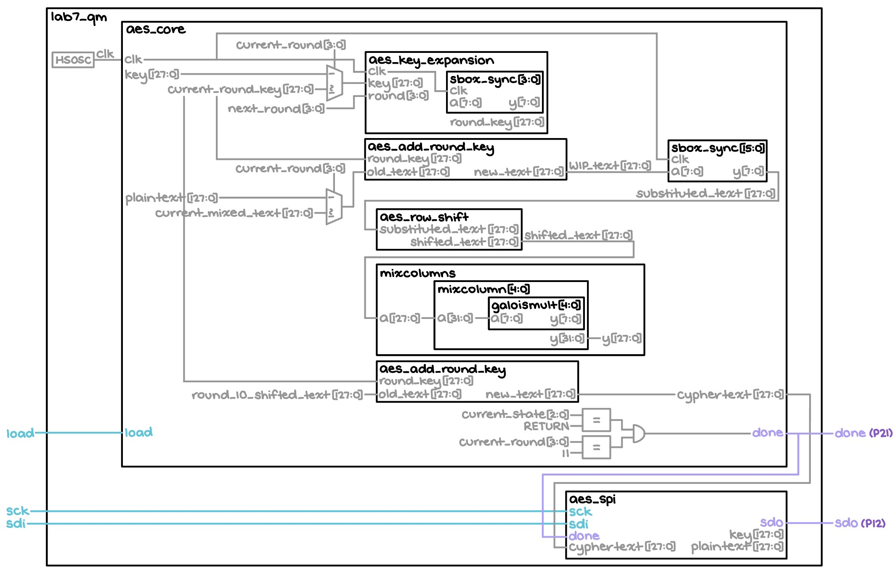
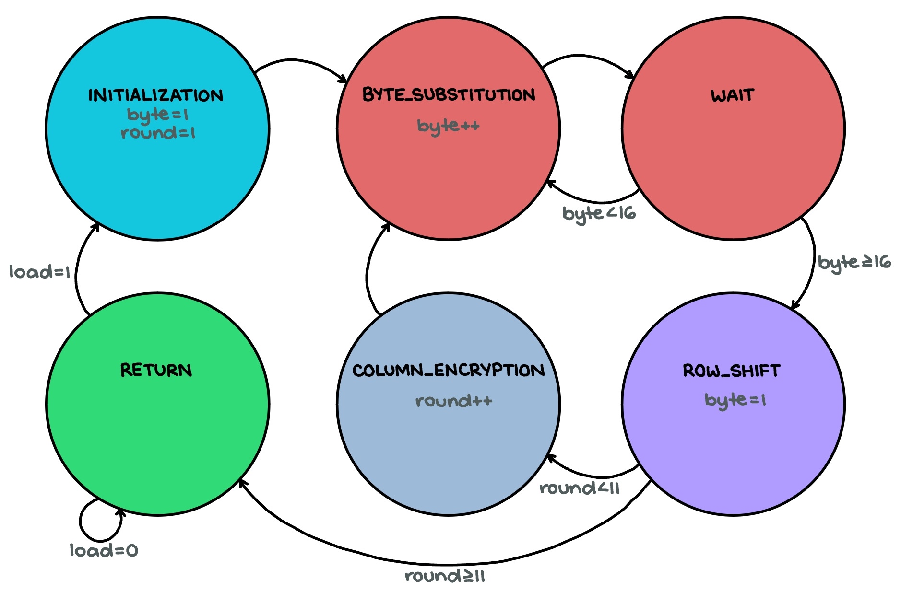
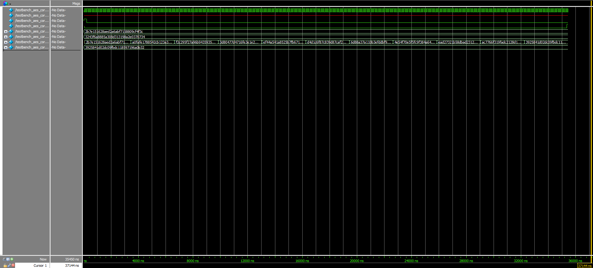
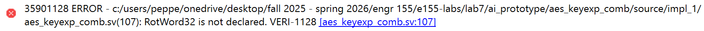
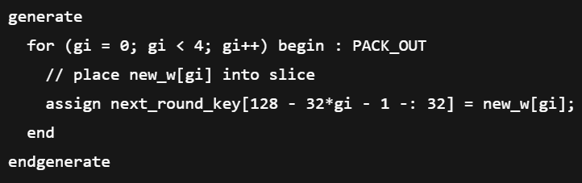
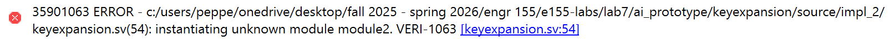
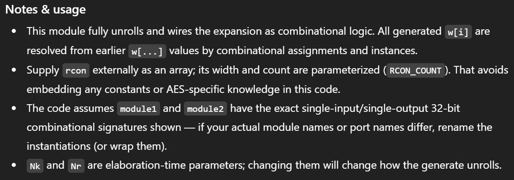

Lab 7: The Advanced Encryption Standard
Introduction
This lab built upon the work done with the SPI peripheral in the previous Lab 6, this time applying it such a way that communication was able to occur between the FPGA and MCU (with the former acting as an accelerator and the latter acting as a core). This was ultimately done with the aim of enabling encrypted messaging, a notably nontrivial system. To be more specific, the MCU would send the FPGA both a key and plaintext, and receive ciphertext in turn; if the message returned was, in fact correct, then it would flash an LED to indicate success. Note that careful thought was put into implementing the AES algorithm on the FPGA, such that the implied architecture would actually fit on the chip. Furthermore, the Logic Analyzer function on one of the lab oscilloscopes was used to prove that proper SPI transactions were actually occurring.
Design and Testing Methodology
Firstly, there were three inputs — including a new-plaintext-message flag (load) and the SPI protocol signals, sck and sdi — and two outputs — an encryption-completed flag (done) and the SPI-related sdo — to the FPGA design.
Using the default 48 MHz clock produced by the internal oscillator, this new signal was fed into an FSM, as depicted in the Finite State Machine Design section below. This FSM was used alongside a flip-flop to increment counters and, more broadly, cycle through the various stages of the AES encryption process, which can be viewed in its entirety in both the official NIST documentation and a derivative interactive animation. The only unique addition to the design was a Wait state, as using synchronous RAM blocks for the byte-substitution step came with a one-cycle latency that needed to be accounted for.
Regarding the MCU design, the entirety of it was actually given with the lab’s starter code, so no unique modifications needed to be made. However, note that pins PB3, PB4, and PB5 were used for the SPI sck, sdo, and sdi signals, respectively, as this course’s custom PCB comprises a switch that ties these specific pins to ones on the FPGA (with those being P21, P12, and P19, respectively). Furthermore, the MCU was configured such that both of the PCB’s PA9 and PA6 LEDs would light up if the expected ciphertext was received in response to the plaintext it sent over; if that was not the case, the PA10 LED was to turn on instead.
Various tests were conducted on the final product, including both physical interaction with the resultant circuits and simulation testbenches, as elaborated on in a later Results and Discussion section. Note that there was an individual testbench created for each SystemVerilog module.
Technical Documentation
The source code for this project can be found in the associated GitHub repository folder.
Block Diagram

The block diagram in Figure 1 depicts the general architecture implied by the SystemVerilog code. The top-level module, titled “lab7_qm,” comprises a high-speed oscillator module that generates a 48 MHz signal, which is immediately fed to the rest of the time-dependent components that make up “aes_core.” One such component is the “aes_key_expansion” module, which makes use of “sbox_sync” to generate the round keys for each round of the encryption process; note that outside of this, “sbox_sync” is more generally used to repeatedly replace bytes in the text being encrypted in the interest of increased security. Meanwhile, the “aes_add_round_key” block takes the current round key and applies it to the text, while “aes_row_shift” shifts the bytes in each row according to the prescribed algorithm. Then, the message goes through “mixcolumns,” which actually comprises multiple copies of the “mixcolumn” and “galoismult” modules. Together, they apply Galois field theory to perform further, more complicated encryption (at the moment, this goes beyond the scope of this project, however). Finally, there is the “aes_spi” block, which allows the FPGA to receive the key and plaintext from the MCU, and send back the ciphertext accordingly.
Finite State Machine Design

The Figure 2 FSM illustrates (and is labeled based on) the main stages of the AES algorithm — byte substitution, row shifting, column mixing, and key addition.
Results and Discussion
The results of Lab 6 are shown in Figure 3, as follows:
Evidently, all of the project’s specs have been met. The LEDs indicating accuracy turned on like they were supposed to for both test cases given in the starter code.
Testbench Simulation
{kind=link}
{kind=link}
{kind=link}
The submodule waveforms in Figures 4a, 4b, and 4c further verify that the design was working exactly as intended: The first two round keys matched the first two round keys from the Appendix B example in the NIST documentation perfectly (excluding the starting key, which did not need to pass through the “aes_key_expansion” module to begin with), the results of the round key addition also concurred with that found in the interactive website’s example (found at the start of Round 2, specifically), and the row shift outputs were accurate to the results garnered when going through the AES algorithm by hand.
{kind=link}
{kind=link}
{kind=link}
Moreover, although already knowing that the given starter modules worked, testbenches were written for all of them, as well. The corresponding waveforms for these can be viewed in Figures 5a, 5b, and 5c above.

Additionally, the AES core trace shown in Figure 6 provides ample evidence of how the final cyphertext output, as depicted in the second-to-last row, eventually matches the expected one outlined on the very bottom.
{kind=link}
{kind=link}
Finally, Figures 7a and 7b depict the success of the design when tested as a whole. As expected, the ninth and tenth signals are exactly the same at the very end of the testing process.
Logic Analyzer Traces
Due to the excessive lengths of the keys/messages being sent over SPI, the Logic Analyzer traces that verify the accuracy and success of the transactions can be viewed in the Figure 8a and 8b videos below. Note that there are also PDF versions of these traces available for both the Write and Read stages of the protocol.
Because the states of the SCLK, MISO (SDO/CIPO), and MOSI (SDI/COPI) signals matched what was expected from the messages pre-programmed into the aforementioned starter code, it is safe to conclude that proper SPI communication has occurred. (Note that due to the oscilloscope’s poor resolution, some of the information during the Read process could not be properly detected and explicitly displayed; however, reasonable extrapolation allows us to make this assertion.)
Conclusion
Overall, the design properly interfaced the FPGA and MCU in such a way that a key and plaintext were successfully sent from the latter to the former, and subsequently generated an accurate ciphertext result using the AES algorithm in response. A total of approximately 16 hours was spent on this lab.
AI Prototype
Using ChatGPT to generate some code in response to the prompt “Write SystemVerilog HDL to implement the KeyExpansion logic described in the FIPS-197 uploaded document. The module should be purely combinational, using the previous key and current round number to calculate the next key. Assume other required modules (SubWord and RotWord) are already implemented,” the LLM produced surprisingly decent results that can be viewed in the public chat transcript.
In fact, the only errors that Lattice Radiant’s synthesis process caught were that of the missing module — the corresponding error message can be viewed in Figure 9 below — which was something that the AI was explicitly told to ignore.

However, while the general code looked reasonable, ChatGPT was somewhat inefficient in its implementation. More specifically, the for loop pictured in Figure 10 was perhaps not the best thing to include, as Verilog loops always imply multiple copies of hardware (something that is especially a concern when it comes to fitting a system as complicated as encryption on a chip).

Additionally, in response to the second prompt, “Write SystemVerilog HDL to implement the following logic: ‘i = 0 while i < Nk do w[i] <- key[4xi..4xi+3] i <- i+1 end while while i <= 4 x Nr + 3 do temp <- w[i-1] if i mod Nk = 0 then temp <- module1(module2(temp)) (+) Rcon[i/Nk] else if Nk > 6 and i mod Nk = 4 then temp <- module1(temp) end if w[i] <- w[i-Nk] (+) temp i <- i + 1 end while return w’ Assume module1 and module2 are existing modules that can be instantiated. (+) refers to XOR. Unwrap the loop in the provided pseudo code so it uses the previous iterations output to generate the new iteration. Do not use any existing knowledge of the AES specifications in your answer,” the LLM once again output code that was surprisingly accurate, as viewable in the public transcript.
Again, the only error message generated by Lattice when given the AI’s code was that of the missing modules, which was not a problem with its functionality itself. This can be seen in Figure 11 below:

Overall, the output for this prompt seemed to be on par with the response given for the first one. While there was again the notably inefficient use of for loops in ChatGPT’s code, at the very least, it was able to produce something that did not rely on the AES standards, as requested. In fact, it even made a mention of such in Figure 12.

Thus, it is reasonable to conclude that using an LLM for encryption produces decently reliable results, even if they aren’t necessarily the most optimized or desirable.